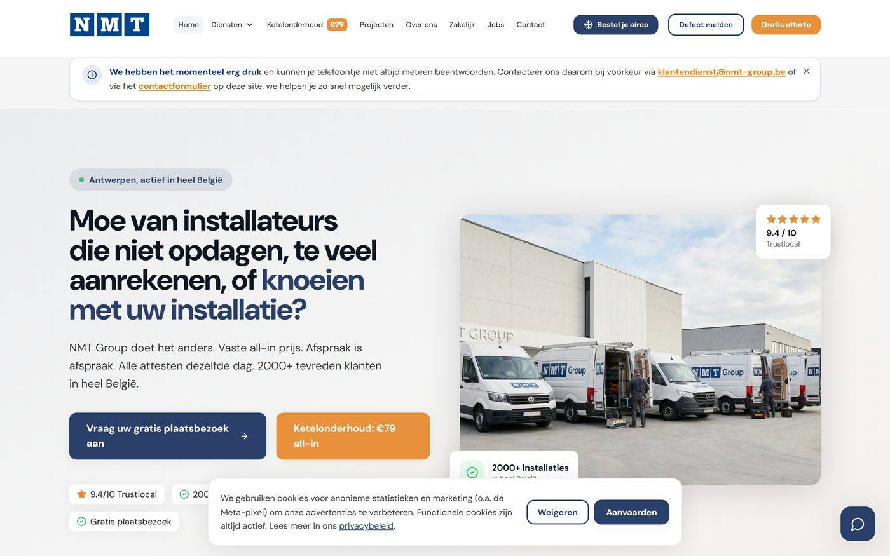

Verwarming, koeling en klimaat
Airco, warmtepompen, ketels en onderhoud, met de configurator en de planning eronder.
Commerciele systemen voor bedrijven in België en Nederland
Wij zijn geen bureau dat stopt bij de klik. Wij bouwen de volledige commerciële motor en draaien hem daarna zelf mee: de advertenties, de website, de offerte, de betaling, het CRM en de opvolging erna. In twaalf sectoren, van installatiebedrijven en aannemers tot webshops en consumentenmerken.
Onze belofte, in één regel
Van advertentie tot getekende order, gebouwd en gemeten.
Wat we niet kunnen meten, verkopen we niet.
01 Waar we werken
Een dakdekker, een webshop en een vastgoedbeheerder lijken niets met elkaar te maken te hebben. Toch verliezen ze hun geld op precies dezelfde plek: tussen de advertentie en de handtekening. Wij hebben die route in elk van deze sectoren gebouwd en doorgemeten.
Airco, warmtepompen, ketels en onderhoud, met de configurator en de planning eronder.
Trajecten met plaatsbezoek, waarbij de afspraak zelf het product is dat de campagne verkoopt.
Grote orderwaarden en lange doorlooptijd, dus staat of valt het bij de opvolging na de offerte.
Van showroom naar webshop, met productdata die op beide plekken hetzelfde zegt.
Aanvraagstromen die de kleine klussen scheiden van de dossiers waar u wel voor uitrukt.
Zakelijke trajecten met een eigen aanvraagflow, apart gescheiden in het CRM en in de opvolging.
Eigen merken opgebouwd: advertenties, bestelstroom, betalingen, upsell en retentie.
Eén van de scherpst gereguleerde en meest concurrerende markten die er online is.
Van eerste vertoning tot herhaalaankoop, gestuurd op klantwaarde in plaats van op klikken.
Langere verkooptrajecten waarin het meeste geld verdwijnt in de stilte tussen twee gesprekken.
Campagnes en volledig geautomatiseerde benaderingsstromen, met opvolging en logboek.
Positionering en investeringsdossiers, waar het verhaal net zo hard telt als het bereik.
In sommige sectoren draaien wij de volledige commerciële kant, in andere alleen de advertenties of de techniek eronder. In het gesprek zeggen we u meteen in welke van die twee uw sector bij ons valt, en wat we er precies gebouwd hebben.
02 Waar het geld weglekt
Het is dat er te veel onderweg verdwijnen. Dat gebeurt op drie plekken, en op alle drie is het meetbaar. De meeste bureaus meten geen van de drie, want ze stoppen bij de klik.
U betaalt om iemand op uw site te krijgen, en daar staat alleen een telefoonnummer. Wie ’s avonds om tien uur een prijs wil weten, klikt weg naar de concurrent die wel een knop heeft.
De aanvraag komt binnen, maar de eerste reactie volgt pas de volgende dag. Wie het eerst reageert wint, en dat is bijna nooit toeval maar een kwestie van inrichting.
De prijs is verstuurd en daarna is het niemands taak meer. Tien offertes per maand van gemiddeld tienduizend euro die stilvallen, is een jaarcijfer waar u niet vrolijk van wordt.
03 Wat we bouwen
Geen losse campagne bovenop een site die niet meewerkt. De onderdelen hieronder zijn gebouwd en draaien vandaag in productie. Achter elk onderdeel staat wat er concreet onder de motorkap zit.
Advertenties op Meta en Google, ingericht op kost per gekwalificeerde aanvraag in plaats van op klikken en vertoningen. Elke euro is te herleiden naar wat hij opleverde.
Gedraaid in installatie, bouw, sanitair, gezondheid en consumentenmerken.
Een configurator of webshop die de klant zelf laat samenstellen en er direct een vaste prijs bij toont. Geen contactformulier dat drie dagen later een terugbelverzoek wordt.
61 producten, 4 merken, 1 tot 5 ruimtes, directe prijsberekening.
De klant boekt en betaalt zelf, in fases, met de betaalmethodes die hier gangbaar zijn. De uitvoering komt rechtstreeks in de agenda te staan, binnen uw echte capaciteit.
Betaling in 3 fases (30/40/30) via Bancontact, kaart en Klarna. Planning bewaakt de dagcapaciteit en de voorlooptijd.
Elke aanvraag landt als dossier in uw CRM, met de juiste fase, bron en opvolgtaak. Niemand hoeft iets over te typen, en dus verdwijnt er niets.
Koppelingen met Teamleader, Shopify, Klaviyo, Stripe en Make. Reconciliatie elke 5 minuten over 11 pijplijnfases.
Bevestiging, herinnering, en opvolging na de offerte, per mail en sms. Dit is het lek dat bij vrijwel iedereen openstaat en dat niemand meet.
13 automatische berichten over 11 fases, plus 6 bewaakte achtergrondtaken die ophalen wat misging.
Elke week ziet u wat er binnenkwam, wat het kostte en wat het opleverde. Niet in vertoningen en bereik, maar in afspraken en getekende orders.
Eigen rapportage rechtstreeks uit het CRM en de advertentieaccounts.
04 Werk en bewijs
Hieronder staat werk uit verschillende sectoren. We beginnen met de case waarvan we de cijfers openlijk kunnen tonen, omdat wij daar de volledige commerciële kant draaien. Daarna volgt de rest.

Case 01 Installatiebedrijf, Antwerpen. Platform door ons gebouwd en beheerd. Live sinds 2026.
Meting Deals uit de CRM-export april 2026. Betalingen uit het Stripe-dashboard, 14 april tot 14 mei 2026.
Sector: verwarming, koeling en gevelwerken
Dit platform telt 32 pagina’s, 37 API-routes en 23 databasemigraties, samen ruim 20.000 regels code. Dat noemen we niet om indruk te maken met techniek, maar omdat het uitlegt waarom een campagne bovenop een gewone brochuresite zelden werkt.
De klant kiest zelf zijn pakket, betaalt meteen online, en het team krijgt het dossier automatisch in het CRM met de melding dat er alleen nog een datum geprikt moet worden. Geen telefoon nodig om te verkopen.
Live in productie
Eigen systeem dat bedrijven in kaart brengt en hun online verkoopproces doormeet op 24 punten. Zo weten we voor een eerste gesprek al waar bij u de winst zit, in plaats van een algemeen praatje te houden.
358 bedrijven · 308 BE · 50 NL
Eigen webshops en verkoopfunnels in verzorging en consumentenproducten: advertenties, productpagina, afrekenstroom, upsell en de mailstromen erna. Inclusief de betaalmethodes die per land verschillen.
Meerdere merken · BE, NL en Frankrijk
Zakelijke aanvragen hebben een ander ritme, een andere prijsopbouw en een andere opvolging nodig. Wij zetten dat als apart traject op, met eigen formulieren, eigen CRM-fases en eigen opvolgmails.
Live in productie
Rapportages, benaderingsstromen, dossieropvolging en controles die zichzelf draaien en zichzelf bewaken. Gebouwd met taalmodellen waar dat helpt, en met gewone code waar dat betrouwbaarder is.
In productie bij meerdere opdrachtgevers
Koppelingen tussen CRM, boekhouding en betaalverwerking, zodat omzet, marge en openstaande dossiers uit één bron komen. Zonder dat stuurt u op gevoel.
Live in productie
05 Onze hoofddienst
Van alles wat we doen is dit waar we het vaakst mee starten. Geen website, geen huisstijl, geen adviestraject. Eén ding: advertenties die aanvragen opleveren. Die komen binnen via een formulier in Facebook zelf, met kwalificatievragen erin, zodat u geen mensen nabelt die nog nergens aan toe zijn.
Advertentiebudget minimaal €1.250 per maand, rechtstreeks door u betaald
Voor het bedrijf dat één ding wil laten draaien, meestal het meest winstgevende.
Advertentiebudget minimaal €2.000 per maand, rechtstreeks door u betaald
Voor het bedrijf dat het hele jaar door wil draaien, niet alleen in het seizoen.
Advertentiebudget minimaal €3.000 per maand, rechtstreeks door u betaald
Voor het bedrijf dat zijn agenda structureel wil vullen en er iemand op wil afrekenen.
Betaalt u ons en zet u vervolgens te weinig op advertenties, dan is er te weinig te meten en te sturen. Dan faalt het, en daar heeft niemand iets aan. Vandaar de vuistregel dat het budget minstens gelijk is aan ons tarief.
Zet dat naast uw ordergrootte: bij een gemiddelde order van €4.000 en ongeveer 25% marge levert één opdracht zo’n €1.000 op. Twee tot drie extra orders per maand en u staat quitte.
Wij beloven geen aantal aanvragen. Wie dat wel doet, verzint het of verstopt het in de kleine lettertjes. Wat we wél kunnen laten zien is wat het bij een bestaande opdrachtgever kost per gekwalificeerde aanvraag, en hoe dat gemeten is.
Dit is de instap. Loopt de instroom en wilt u verder, dan bouwen we ook de rest van de motor: de conversiewebsite of webshop, de offerteflow met online betaling, de CRM-koppeling, de geautomatiseerde opvolging en de rapportage die u hierboven ziet staan. Dat gaat in overleg en op maat.
06 Hoe wij werken
Dat is zeldzamer dan het klinkt. De meeste bureaus leveren advertenties en verdwijnen zodra de aanvraag binnen is. Wij zitten aan allebei de kanten van die lijn: aan de kant waar de campagne gemaakt wordt en aan de kant waar de klant tekent.
Voor het eerste gesprek hebben we uw online verkoopproces al doorgemeten op 24 punten. U krijgt dus geen algemeen praatje maar een lijst met waar het bij u weglekt, en wat dat per maand kost.
De advertenties, de site, de koppelingen en de automatisering komen uit hetzelfde huis. Er zit geen onderaannemer tussen en dus ook geen vertraging, geen misverstand en geen extra marge.
Bij ons zit iemand aan tafel die zelf al meer dan tien jaar offertes tekent bij klanten thuis. Wat er aan de keukentafel misgaat, is de volgende dag terug te zien in de targeting.
Vertoningen en klikken zijn geen resultaat. U krijgt van ons wat er binnenkwam, wat het kostte en wat er getekend is. Klopt dat cijfer niet, dan zegt u dat gewoon en dan lossen we het op.
Wat wij niet doen. Wij nemen bewust een beperkt aantal volledige trajecten tegelijk aan. Een motor bouwen en daarna zelf meedraaien is iets anders dan een campagne aanzetten, en wie beweert dat hij dat voor tientallen bedrijven tegelijk doet, doet het voor geen enkele goed. De advertentiepakketten hierboven kunnen we wél breder aanbieden, want daar is het werk voorspelbaar en het resultaat direct meetbaar.
Volgende stap
Geen presentatie en geen offerte aan tafel. Wij vragen naar uw cijfers, u vraagt naar de onze, en daarna weten we allebei of het zin heeft. Kunnen we het bij u niet waarmaken, dan zeggen we dat in datzelfde gesprek.